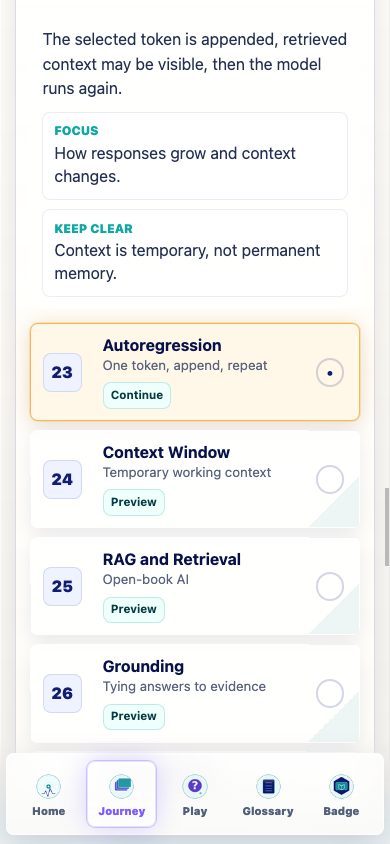
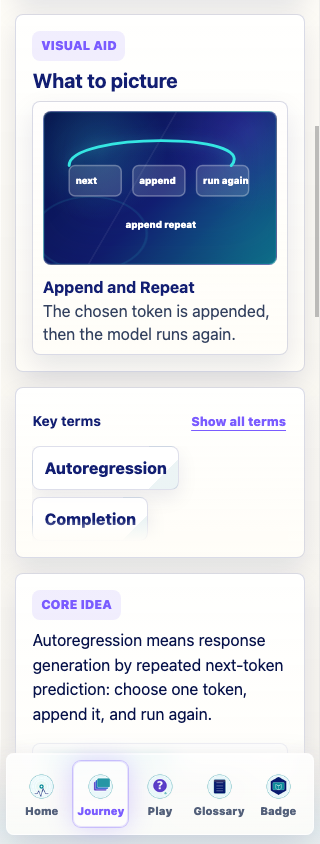
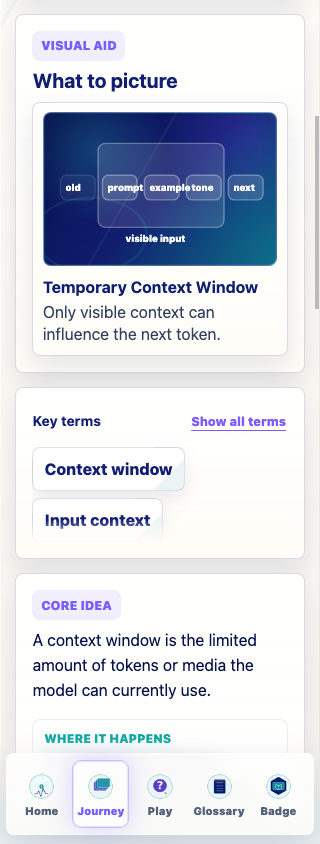
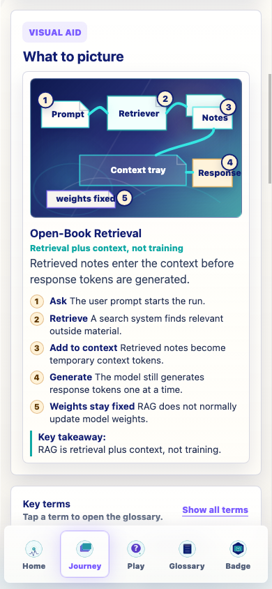
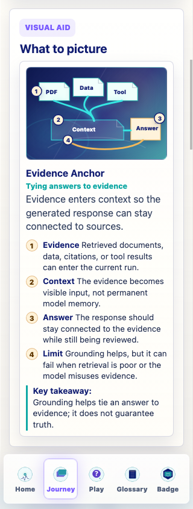
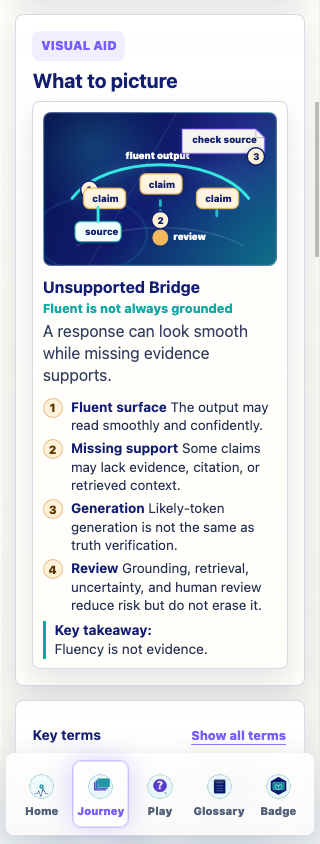
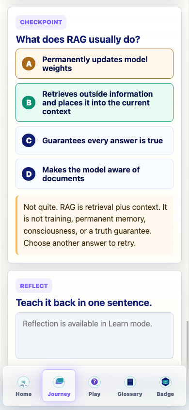

Prompt Life v0.22 audit package
The Day Repeats Stage Audit
Documentation-only review of Autoregression, Context Window, RAG and Retrieval, Grounding, and Hallucinations. No live curriculum, progress, games, badge, dependency, generated asset, checkpoint randomization, or Glossary Dojo behavior was changed.
63 screenshots 390px primary QA 320px and 430px spot checks Build passedStage Audited
The Day Repeats teaches how a response grows after one token is chosen: append the token, run again, grow temporary context, retrieve evidence when a RAG system is present, ground what can be supported, and recognize hallucinations when fluent output outruns evidence.
Major Findings
- The stage order is correct: Autoregression -> Context Window -> RAG and Retrieval -> Grounding -> Hallucinations.
- Autoregression and Context Window are accurate but still use the older slim lesson schema.
- RAG and Retrieval is the strongest current card: retrieval plus context, not training or permanent memory.
- Grounding and Hallucinations handle evidence, truth, uncertainty, and intent carefully.
- The next pass should make the complete loop more visible across the stage.
Visual Findings
- RAG, Grounding, and Hallucinations remain readable at 320px and 390px.
- Autoregression and Context Window are readable but too generic for their teaching burden.
- No horizontal overflow was reported in the screenshot manifest.
- No required Image 2 asset is recommended before the coded/SVG implementation pass.
Specific Answers
- Autoregression is partly distinct from Sampling; the next pass should show Sampling chooses and Autoregression loops.
- Context Window mostly avoids permanent-memory confusion, but needs an explicit durable-vs-temporary field.
- RAG is clearly retrieval plus context, not training.
- Grounding is clearly evidence support, not a truth guarantee.
- Hallucinations are framed as unsupported fluent output, not lying or consciousness.
- Autoregression is the visual that most needs repair.
- Autoregression most needs a tiny interaction, with Context Window close behind.
- No cards are too technical; Autoregression and Context Window are more thin than technical.
- No cards are out of order.
- No required Image 2 asset is justified now; Hallucinations is only an optional later textless bridge-scene candidate.
- The stage prepares learners for later risk and responsibility stages by connecting temporary context, retrieval, grounding, hallucinations, and human judgment.
Recommended Assets
| Card | Coded SVG / HTML | Image 2 | Tiny interaction |
|---|---|---|---|
| Autoregression | Choose-token, append, rerun, context grows. | None. | Tap-step append loop. |
| Context Window | Tray with prompt, history, retrieved text, response-so-far, and old context falling out. | None. | Push cards into a limited window. |
| RAG and Retrieval | Keep current lanes; add lane-highlight states. | None. | Tap prompt -> retriever -> notes -> context -> response. |
| Grounding | Claim-to-evidence support map. | None. | Match claims to evidence. |
| Hallucinations | Bridge with supported and unsupported claims. | Optional later textless bridge scene. | Mark missing supports. |
Representative Screenshots







Verification
npm run typecheck: passed.npm run build: passed with the existing Vite large-chunk warning.npm run build:pages: passed with the existing Vite large-chunk warning.npm run audit:answers: passed.stage-audit.json: valid JSON.
Known Issues
- The existing Vite large-chunk warning remains.
- Autoregression and Context Window still need implementation repairs.
- RAG, Grounding, and Hallucinations interactions remain generic until the next implementation pass.
Recommended Next Prompt
Implement a v0.22.1 The Day Repeats repair pass. Do not add new Journey cards, games, generated PNG assets, heavy 3D libraries, dependencies, badge changes, progress-rule changes, checkpoint-randomization changes, Glossary Dojo changes, or Journey order changes. Keep the order: Autoregression, Context Window, RAG and Retrieval, Grounding, Hallucinations. Convert Autoregression and Context Window from the older slim schema to the richer lesson architecture with explicit core explanation, model lifecycle, durable-vs-temporary notes, prompt-vs-response/current-context notes, misconceptions, and clearer feedback. Preserve the strong RAG, Grounding, and Hallucinations distinctions while giving them more specific tiny interactions. Update coded SVG/HTML visuals so Autoregression shows choose-token -> append -> rerun, Context Window shows prompt/conversation/retrieved/response-so-far cards plus old context falling out, RAG keeps retrieval-plus-context-not-training, Grounding shows claim-to-evidence support, and Hallucinations shows fluent output outrunning support. Keep all text in HTML, keep visuals readable at 320px and 390px, and run npm run typecheck, npm run build, npm run build:pages, and npm run audit:answers.